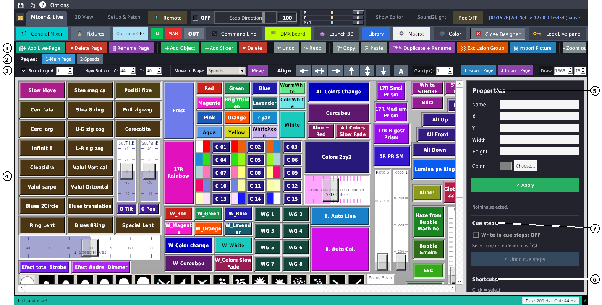
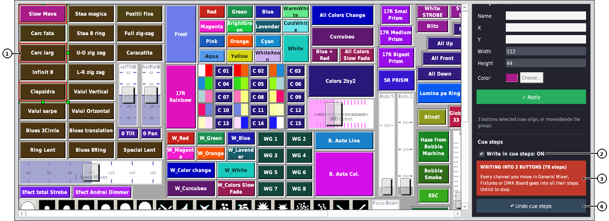
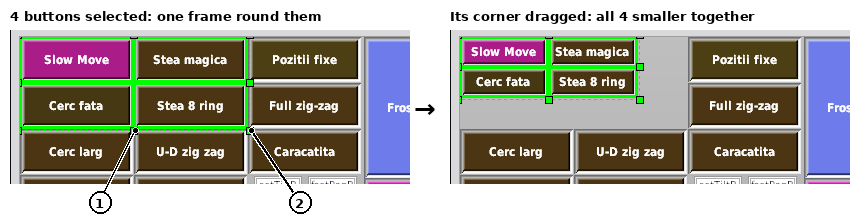
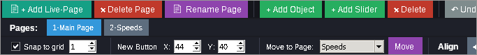
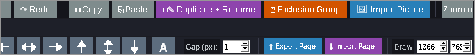

For: Full
Design Live-Panel (on the function bar) turns the Live panel into its designer: buttons, sliders and pictures can be added, moved, sized, coloured and set up, and pages added. The button then reads Close Designer; pressed, it gives the panel back for playing. The changes go into the open project at once; Save writes them into its file. In the Player the button says Modify here not available.

The designer on the main page, nothing selected.
| 1 | The pages, the objects and the editing (first row, below). |
| 2 | Pages - the pages of the panel; a click shows one. |
| 3 | Placing (second row, below). |
| 4 | The page: select, move and size its objects here. |
| 5 | Properties - of what is selected: Name, X, Y, Width, Height, Color (Choose...); for a button also its commands, the number of its steps (Cues, View... shows them), its trigger and its other settings (scroll the panel). Apply (or Enter in a box) sets them. A new name for a button that is used elsewhere asks first: see Object Propertys - A new name (here Undo takes back the rename and everything changed with it). |
| 6 | Shortcuts - a reminder of the mouse and the keys. |
| 7 | Cue steps - Write in cue steps: a channel into all the steps of the selected buttons (see below). |
A channel set the same in every step of several buttons at once, without opening each one: for example the second dimmer of a fixture that was left out of the buttons, to full.

Three buttons selected, Write in cue steps ON, a channel already written.
| 1 | The buttons selected (Ctrl + click, or a frame drawn round them). While it is ON their frame is red. |
| 2 | Write in cue steps: OFF / ON - tick it to start, untick it to stop. |
| 3 | While it is ON: how many buttons and steps it writes into. |
| 4 | Undo cue steps - every step of these buttons back as it was before you ticked (grey until something was written). |

| 1 | With two or more objects selected (buttons, sliders, pictures), a dashed frame goes round all of them, with 8 handles. |
| 2 | Drag a handle: all the objects grow or shrink together, as one block - their sizes and the spaces between them, so they stay in line and do not go over one another. The opposite side of the frame stays where it is. |
Snap to grid works on the edge you drag. No object gets smaller than 8 pixels. Ctrl+Z takes it back. The spaces grow with the objects: to have them as before, press an Align arrow with your Gap (px) afterwards. A bigger block can go over the objects next to it; move them or the block.


The two rows of the designer, in two parts. On a screen 1366 wide their last buttons are past its right edge.
| Button | What it does |
|---|---|
| Add Live-Page, Delete Page, Rename Page | The pages of the panel. |
| + Add Object | Opens the Library: a light sequence dragged from it onto the page becomes a new button there. |
| + Add Slider | A new slider at the mouse (New Slider), as wide as New Button X, 100 high. Set it up with a right click (see Sliders). |
| Delete | Deletes what is selected. |
| Undo, Redo, Copy, Paste | As their names say. |
| Duplicate + Rename | New buttons made from the selected ones: in their names Text to find is replaced with Replace with, they are placed at Offset (X, Y) from the originals. They have no steps of their own (On Start is their new name). The window can also write the macros that make the new buttons stop each other. |
| Exclusion Group | For two or more selected buttons: each one, when it starts,
stops all the others. It writes the macro of each button again (its list of stopobject); a button with
an empty On Start gets its own name there. |
| Import Picture | A picture file onto the page; the file is copied into the project. |
| Zoom out, Zoom in, 1:1 | The size of the view; 1:1 is the size the panel has when playing. |
| Part | What it does |
|---|---|
| Snap to grid | Moving and sizing go by the step in the box next to it. |
| New Button X, Y | The width (X) and the height (Y) of the new buttons and sliders. |
| Move to Page, Move | Moves the selected objects to the page chosen. |
| Align | The selected objects lined up on the left, centre or right, on the top, middle or bottom - and placed one after another, Gap (px) apart. A: all to the same (average) size, in a grid of rows and columns, Gap apart. |
| Export Page, Import Page | A page with its objects and
their macros into a .x1page file, and from one into this project. |
| Draw | Ticked, a frame of that size (1366 x 768) is drawn on the page: what fits on such a screen. |
| Do | To |
|---|---|
| Click | select one object |
| Ctrl + click | add it to the selection, or take it out |
| Drag on an empty place | select the objects inside the frame drawn |
| Shift + drag | select every object the mouse passes over |
| Drag what is selected | move it |
| Drag a corner | size it; with several selected, a corner of the frame round them sizes them all (see above) |
| Right click | the settings of the object; with several of the same kind selected, one window for all of them (see Object Propertys) |
| Right drag on an empty place | move the view |
| Wheel, Ctrl + wheel | scroll, zoom |
| Arrows (Shift + arrows) | move what is selected 1 pixel (10 pixels) |
| Delete | delete what is selected |
| Ctrl+C, Ctrl+V | copy, paste |
| Ctrl+Z, Ctrl+Y | undo, redo |
| Ctrl+D | Duplicate + Rename |
The keys do not act while you type in a box.